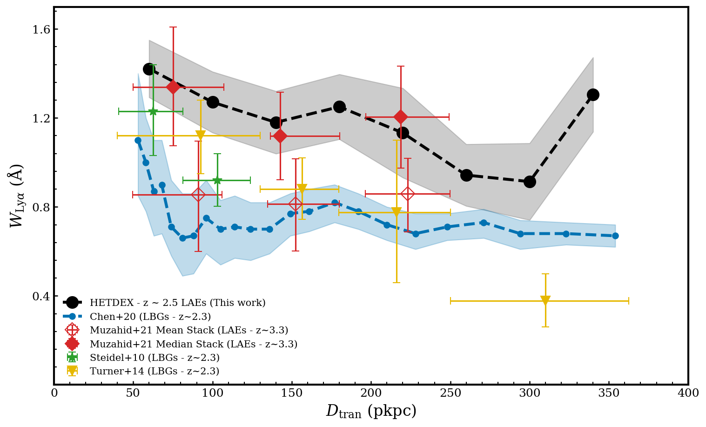

The HETDEX Survey: Probing Neutral Hydrogen in the Circumgalactic Medium of ∼88,000 Lyman Alpha Emitters
Research
I study how neutral hydrogen is distributed around high-redshift galaxies, and what that tells us about galaxy environments and the baryon cycle. In my recent work, I use HETDEX/VIRUS fiber spectra to detect extremely faint Lyα absorption imprinted on the integrated light of background galaxies. :contentReference[oaicite:1]{index=1}
- Stack millions of spectra in annuli around ~88,000 high-confidence LAEs to boost S/N. :contentReference[oaicite:2]{index=2}
- Detect Lyα absorption statistically out to ~350 kpc and measure an empirical radial equivalent-width profile. :contentReference[oaicite:3]{index=3}
- Compare the observed profile to forward-modeled hydrodynamical simulations (ASTRID) to connect the signal to CGM/IGM H I structure. :contentReference[oaicite:4]{index=4}
- Ongoing direction: quantify how the profile changes with redshift, Lyα luminosity, and local density. :contentReference[oaicite:5]{index=5}

Publications
Using Lyα Absorption to Measure the Intensity and Variability of z ∼ 2.4 Ultraviolet Background Light
Absorption Troughs of Lyα Emitters in HETDEX
(If you want, you can add ADS links for each entry later in the same “pill” style.)
Contact
Email: mahanmkh@utexas.edu
For collaborations/questions related to HETDEX stacking analyses, CGM/IGM absorption, or LAE environments, feel free to reach out.